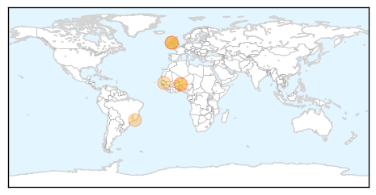

30 Day Trends
Web: 2 alerts, 0 warnings
Twitter: 2 alerts, 0 warnings
Top Articles:
- 0.999
- Rapidly growing outbreak of meningococcal disease in Niger
- 0.999
- Rapidly growing outbreak of meningococcal disease in Niger
- 0.996
- Meningitis in Niger: 100 people hospitalised in critical condition every day in Niamey - Niger
- 0.962
- Meningitis in Niger: 100 people hospitalized every day in Niamey
- 0.869
- Potentially-deadly bacteria at Harland and Wolff
- 0.840
- Belfast shipyard struck by bacterial outbreak
- 0.716
- Employees offered vaccination after bacterial infection which could cause deadly illnesses breaks out at Belfast's Harland and Wolff
- 0.704
- Fears of spread of deadly illnesses as bacterial infection breaks out at shipyard
Top Tweets:
-
No tweets found for May 15, 2015
Web/News Articles

Tweets

Article Locations
Article Confidences